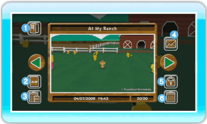
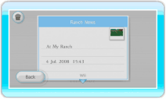

20 |
Album |
 |
You can view the pictures you took at the Ranch or post pictures on the Wii Message Board. You can save up to 20 pictures in the Album. You can also save your pictures to an SD Card. Note: If you take more than 20 pictures, the oldest pictures will automatically be deleted. ● Viewing the Album When you select ALBUM under the Main Menu, an Album Screen will be displayed. When you want to move to a different picture, point to the green arrow, press left or right on  Back
Exit the Album screen. Save to SD Card
Save the pictures from My Pokémon Ranch to an SD Card. Note: Pictures are saved in JPEG format. Pictures you save to an SD Card cannot be restored in the Album, but you can view them in the Wii Photo Channel or on your computer. Note: The copyright of all pictures taken in My Pokémon Ranch belong to The Pokémon Company and other parties. Please do not use them outside of copyright law. Delete all pictures on SD Card
Delete all of the My Pokémon Ranch pictures saved on the SD Card. 
Post on the Wii Message Board
You can post and view pictures on the Wii Message Board. Secure / Cancel Secure
Here you can secure or cancel secure the picture being displayed. When you secure a picture, that picture is protected against being deleted. You can secure up to 19 pictures. Delete
You can delete the picture that is currently displayed.
|
 , or press
, or press  or
or  .
. |
 |
 |